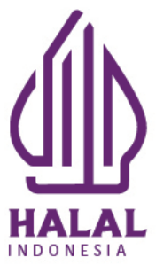
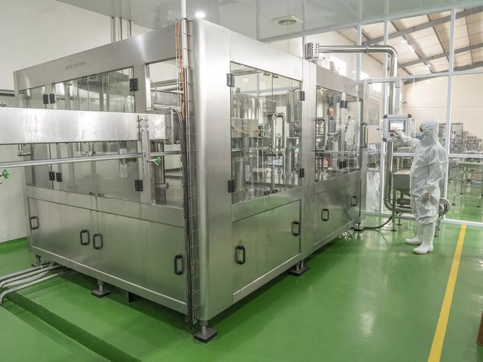

Jl. Raya Cipeucang/Ciuncal No. 88 A, Cipeucang, Kec. Cileungsi, Kab. Bogor, Jawa Barat 16820
NIB9120106342207
Merek terdaftar DJKIIDM000818024
BPOM RIMD 122882000900549 (botol)
Halal BPJPHID00110007032150723

PT TRANSWATER ROBERI INDONESIA
Premium dan Higienis
Tentang kami
PT. Transwater Roberi Indonesia berdiri pada 2017 dan memproduksi air minum dalam kemasan ARTIC di Cileungsi, Bogor: botol 330 ml, 600 ml, dan galon 19 liter untuk konsumen bisnis dan individu.
Air minum harus aman dan konsisten dari satu pengiriman ke pengiriman berikutnya. Karena itu setiap tahap, dari pengolahan air sampai pengemasan, dijalankan dengan kontrol kualitas yang ketat.
Nilai perusahaan
IntegritasBekerja dengan jujur dan dapat dipercaya.
KemitraanKerja sama jangka panjang dengan pelanggan dan mitra.
ProfesionalTim yang berdaya dan profesional di setiap bagian.
PertumbuhanTumbuh bersama untuk Indonesia yang lebih sehat.
Tim kami
Tim karyawan terlatih yang fokus pada mutu produk dan inovasi berkelanjutan, dalam lingkungan kerja yang asri, aman, dan nyaman.
Penyaringan airReverse osmosis (RO)

Mesin pengisianMesin pengisian (dalam)Botol berlabel di jalur produksi
Visi
Menjadi produsen air minum dalam kemasan yang Premium dan Higienis untuk Indonesia yang sehat, dan menjangkau pasar internasional.
Misi
Menyediakan air minum yang Premium dan Higienis dengan teknologi modern demi kesehatan masyarakat Indonesia. Membangun citra merek dan layanan yang unggul, serta menjalin kemitraan yang saling menguntungkan.
Produk & proses
Air mineral ARTIC: botol 330 ml dan 600 ml (1 karton = 24 botol), galon 19 liter.
Pengolahan air dengan reverse osmosis (RO).
Proses produksi mengacu pada SNI 3553:2023 (air mineral).
Setiap batch diberi kode sehingga asal produksinya dapat ditelusuri.
Kontrol kualitas
1
Sumber air diuji dulu. Pengujian sumber air yang ketat sebelum air masuk ke produksi.
2
Pengolahan bertahap. Teknologi modern, termasuk reverse osmosis, untuk menyingkirkan kemungkinan kontaminasi.
3
Diuji lagi setelah diolah. Pengujian tambahan memastikan air benar-benar bebas dari kontaminasi.
4
Higienis sampai dikemas. Kebersihan dan sterilisasi dijaga selama pengemasan.
5
Bisa dilacak per batch. Setiap batch diberi kode untuk penelusuran.
6
Diaudit rutin. Prosedur dipatuhi dan setiap masalah cepat ditangani.